File: 000450.gt.txt (if the image is defective, simply delete all Arabic text and the line will be excluded)
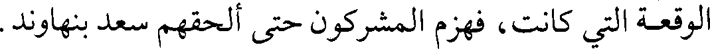
الوقعة التي كانت، فهزم المشركون حتى ألحقهم سعد بنهاوند.
File: 000451.gt.txt (if the image is defective, simply delete all Arabic text and the line will be excluded)
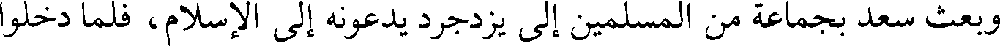
وبعث سعد بجماعة من المسلمين إلى يزدجرد يدعونه إلى الإسلام، فلما دخلوا
File: 000452.gt.txt (if the image is defective, simply delete all Arabic text and the line will be excluded)
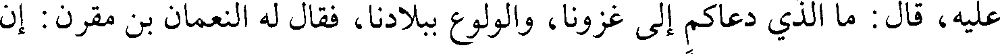
عليه، قال : ما الذي دعاكم إلى غزونا، والولوع ببلادنا، فقال له النعمان بن مقرن : إن
File: 000453.gt.txt (if the image is defective, simply delete all Arabic text and the line will be excluded)
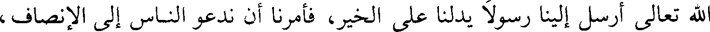
الله تعالى أرسل إلينا رسولا يدلنا على الخير، فأمرنا أن ندعو الناس إلى الإنصاف،
File: 000454.gt.txt (if the image is defective, simply delete all Arabic text and the line will be excluded)
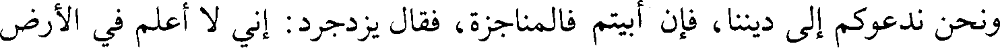
ونحن ندعوكم إلى ديننا، فإن أبيتم فالمناجزة، فقال يزدجرد : إني لا أعلم في الأرض
File: 000455.gt.txt (if the image is defective, simply delete all Arabic text and the line will be excluded)
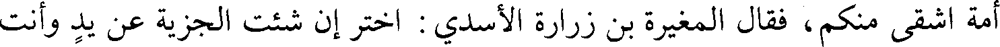
أمة أشقى منكم، فقال المغيرة بن زرارة الأسدي : اختر إن شئت الجزية عن يد وأنت
File: 000456.gt.txt (if the image is defective, simply delete all Arabic text and the line will be excluded)
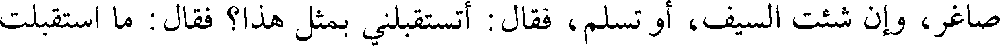
صاغر، وإن شئت السيف، أو تسلم، فقال : أتستقبلني بمثل هذا؟ فقال : ما استقبلت
File: 000457.gt.txt (if the image is defective, simply delete all Arabic text and the line will be excluded)
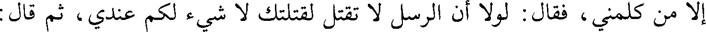
إلا من كلمني ، فقال : لولا أن الرسل لا تقتل لقتلتك لا شيء لكم عندي، ثم قال :
File: 000458.gt.txt (if the image is defective, simply delete all Arabic text and the line will be excluded)
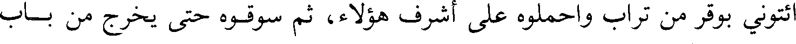
ائتوني بوقر من تراب واحملوه على أشرف هؤلاء، ثم سوقوه حتى يخرج من باب
File: 000459.gt.txt (if the image is defective, simply delete all Arabic text and the line will be excluded)
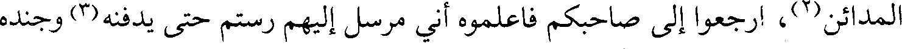
المدائن(2)، ارجعوا إلى صاحبكم فاعلموه أني مرسل إليهم رستم حتى يدفنه(3) وجنده
File: 000460.gt.txt (if the image is defective, simply delete all Arabic text and the line will be excluded)
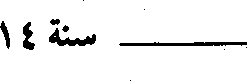
File: 000461.gt.txt (if the image is defective, simply delete all Arabic text and the line will be excluded)
File: 000462.gt.txt (if the image is defective, simply delete all Arabic text and the line will be excluded)
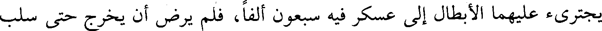
يجترئ عليهما الأبطال إلى عسكر فيه سبعون ألفا، فلم يرض أن يخرج حتى سلب
File: 000463.gt.txt (if the image is defective, simply delete all Arabic text and the line will be excluded)
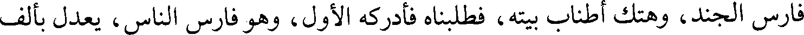
فارس الجند، وهتك أطناب بيته، فطلبناه فأدركه الأول، وهو فارس الناس، يعدل بألف
File: 000464.gt.txt (if the image is defective, simply delete all Arabic text and the line will be excluded)
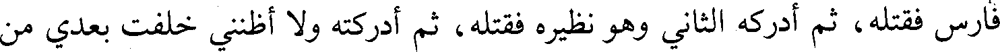
فارس فقتله، ثم أدركه الثاني وهو نظيره فقتله، ثم أدركته ولا أظنني خلفت بعدي من
File: 000465.gt.txt (if the image is defective, simply delete all Arabic text and the line will be excluded)
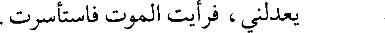
يعدلني، فرأيت الموت فاستأسرت.
File: 000466.gt.txt (if the image is defective, simply delete all Arabic text and the line will be excluded)
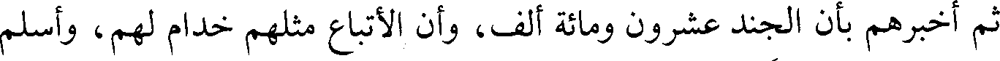
ثم أخبرهم بأن الجند عشرون ومائة ألف، وأن الأتباع مثلهم خدام لهم، وأسلم
File: 000467.gt.txt (if the image is defective, simply delete all Arabic text and the line will be excluded)
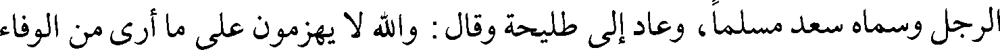
الرجل وسماه سعد مسلما، وعاد إلى طليحة وقال : والله لا يهزمون على ما أرى من الوفاء
File: 000468.gt.txt (if the image is defective, simply delete all Arabic text and the line will be excluded)
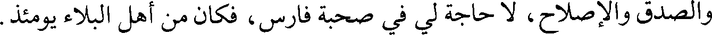
والصدق والإصلاح، لا حاجة لي في صحبة فارس، فكان من أهل البلاء يومئذ.
File: 000469.gt.txt (if the image is defective, simply delete all Arabic text and the line will be excluded)
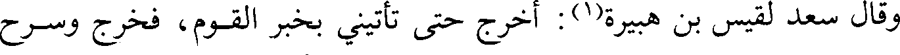
وقال سعد لقيس بن هبيرة(1): أخرج حتى تأتيني بخبر القوم، فخرج وسرح
File: 000470.gt.txt (if the image is defective, simply delete all Arabic text and the line will be excluded)
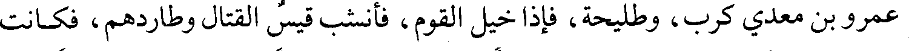
عمرو بن معدي كرب، وطليحة، فإذا خيل القوم، فأنشب قيس القتال وطاردهم، فكانت
File: 000471.gt.txt (if the image is defective, simply delete all Arabic text and the line will be excluded)
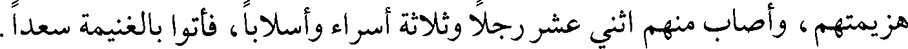
هزيمتهم، وأصاب منهم اثني عشر رجلا وثلاثة أسراء وأسلابا، فأتوا بالغنيمة سعدا.
File: 000472.gt.txt (if the image is defective, simply delete all Arabic text and the line will be excluded)
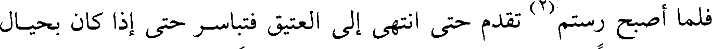
فلما أصبح رستم(2) تقدم حتى انتهى إلى العتيق فتباسر حتى إذا كان بحيال
File: 000473.gt.txt (if the image is defective, simply delete all Arabic text and the line will be excluded)
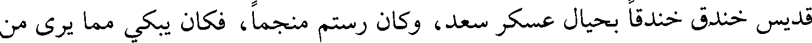
قديس خندق خندقا بحيال عسكر سعد، وكان رستم منجما، فكان يبكي مما يرى من
File: 000474.gt.txt (if the image is defective, simply delete all Arabic text and the line will be excluded)
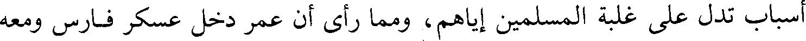
أسباب تدل على غلبة المسلمين إياهم، ومما رأى أن عمر دخل عسكر فارس ومعه
File: 000475.gt.txt (if the image is defective, simply delete all Arabic text and the line will be excluded)
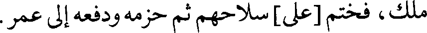
ملك، فختم [على] سلاحهم ثم حزمه ودفعه إلى عمر.
File: 000476.gt.txt (if the image is defective, simply delete all Arabic text and the line will be excluded)
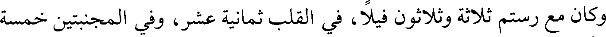
وكان مع رستم ثلاثة وثلاثون فيلا، في القلب ثمانية عشر، وفي المجنبتين خمسة
File: 000477.gt.txt (if the image is defective, simply delete all Arabic text and the line will be excluded)
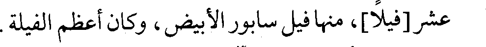
عشر[فيلا]، منها فيل سابور الأبيض، وكان أعظم الفيلة.
File: 000478.gt.txt (if the image is defective, simply delete all Arabic text and the line will be excluded)
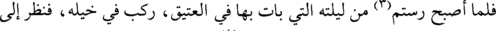
فلما أصبح رستم(3) من ليلته التي بات بها في العتيق، ركب في خيله، فنظر إلى
File: 000479.gt.txt (if the image is defective, simply delete all Arabic text and the line will be excluded)
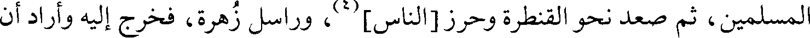
المسلمين، ثم صعد نحو القنطرة وحرز[الناس](4)، وراسل زهرة، فخرج إليه وأراد أن
To Save: `Ctrl+s`, make sure to choose `Webpage, complete`!